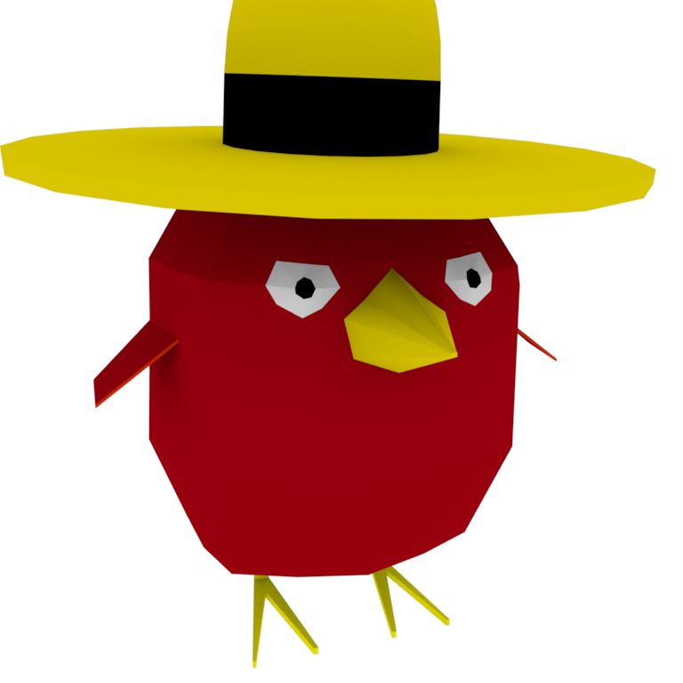

Shrine Guardians
2017/Augmented Reality Experience Shrine Guardians is an augmented reality experience meant to take advantage of the Vuforia toolkit and Unity3D to create a minimalist storytelling experience around the environment of NYU Shanghai's Interactive Media Arts environment. Using beautiful ink-based AR tags inspired by Chinese ink paintings, drawn by the wonderful Reine Defranco, we built a story